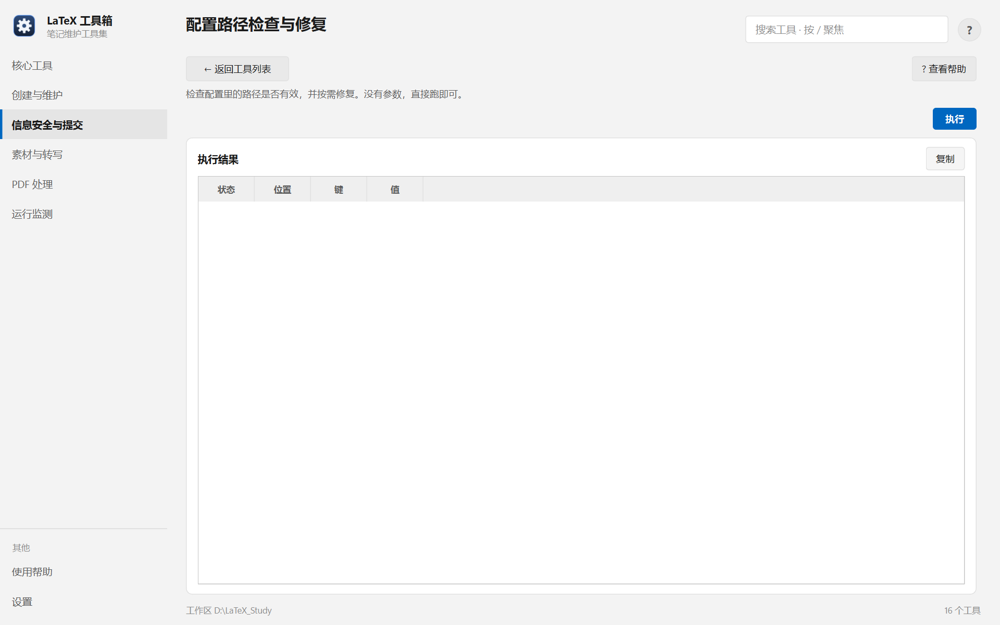

帮助目录 · 信息安全与提交
逐个检查各工具配置里的路径是否还有效（换了电脑、挪了目录之后特别有用），并可一键改成正确值。
| 面板入口 | 信息安全与提交 → 卡片「配置路径检查与修复」→ 执行 |
|---|---|
| 命令行 | python tools/sync_paths/sync_paths.py |

没有参数，直接执行；每条形如「[OK] symbols.conf:6 root = …」。
manager.conf / symbols.conf / progress.conf 里的路径哪个是坏的。[OK] 是有效，[失效] 会写出键名与当前值。--write），它会按工作区位置推算正确值并写回。| 项 | 说明 |
|---|---|
| （无字段） | 这个工具不需要参数；勾选项在命令行里是 --write。 |
python tools/sync_paths/sync_paths.py # 只检查 python tools/sync_paths/sync_paths.py --write # 检查并修复
| 内容 | 位置 |
|---|---|
| 检查的配置 | symbols/symbols.conf、manager/manager.conf、progress/progress.conf |
| 配置文件位置 | 便携：各工具目录；安装：%LOCALAPPDATA%\LaTeX-Toolbox\<工具>\ |
Q：显示「[失效] manager.conf:1 root = D:\旧盘\...」
A：工作区搬过家。勾「真正修复」跑一次，或手工改成新路径。
Q：修复会不会把别的键也改掉？
A：只改它认识的那几个键（笔记根、模板路径、cwl 路径），其余行原样保留。
Q：配置里留空的值算不算失效？
A：不算。留空表示「用默认值」，工具会跳过。
Q：为什么某个配置文件没被检查？
A：文件不存在就跳过 —— 说明那个工具还没配置过，先用一次它就会生成。